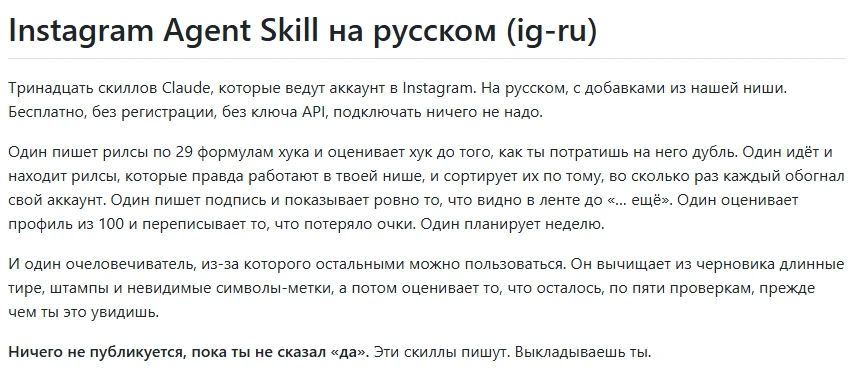

Instagram-агент в Claude Code
13 бесплатных скиллов: пишут твои рилсы и подписи, находят, что залетает в нише, и планируют неделю
Что он умеет
- Рилс из сырой идеиТри хука по 29 формулам с оценкой, сценарий и надписи по секундам
- Залетевшие рилсы нишиНаходит их и объясняет, почему они залетели
- ПодписьПоказывает, что видно в ленте до «… ещё»
- Комментарии и ответыПод чужими постами и под твоими, по делу
- Профиль и неделяОценка профиля из 100 и план: что выложить, когда и с кем общаться
Что понадобится
- Claude Code. Он входит в тарифы Pro, Max, Ultra, Team и Enterprise, на бесплатном его нет
- Компьютер на Windows или Mac: приложение Claude или Claude Code в терминале
- Git, чтобы скачать скилл с GitHub, и Python для оценки хуков и подписей. Как проверить, в шаге 1
Шаг 1 из 4
Проверь Git и Python
- Открой PowerShell: нажми «Пуск», напиши PowerShell и открой его
- Открой Терминал: нажми Cmd+Пробел, напиши Терминал и открой его
- Вставь по очереди две команды, после каждой нажми Enter
git --versionpython --versionpython3 --versiongit version 2.56.1 и Python 3.15.2. Цифры могут быть другими, главное, что ошибки нетЕсли git не найден
winget install --id Git.Git -e --source wingetxcode-select --installЕсли Python не найден
winget install 9NQ7512CXL7T -e --accept-package-agreements --disable-interactivityШаг 2 из 4
Открой Claude Code
- Открой приложение Claude и перейди на вкладку Code вверху слева
- Под полем ввода выбери Local, затем Open folder… и любую папку, например новую папку instagram
claude в любой папкеШаг 3 из 4
Скинь ссылку на скилл
Скопируй фразу, вставь в Claude Code и отправь. Он сам скачает скилл и проверит, что всё работает

Через терминал, если так удобнее
git clone https://github.com/lapurryt/instagram-agent-skill-ru "$HOME\.claude\skills\ig-ru"git clone https://github.com/lapurryt/instagram-agent-skill-ru ~/.claude/skills/ig-ruШаг 4 из 4
Научи его своему голосу и пробуй
Сначала дай Claude три своих рилса. По ним он соберёт файл с твоим голосом. Дальше каждый скилл пишет твоими словами, с твоими оборотами и длиной фраз
Попробуй скиллы
Пиши обычными словами и называй скилл. Примеры над окном, нажми на любой
Рилс из сырой идеи
Ответы примерные, у тебя ИИ скажет своими словами
Все 13 скиллов
ig-reel рилс из идеи: три хука с оценкой, сценарий, надписи и биты по секундамig-viral залетевшие рилсы ниши, отсортированные по тому, во сколько раз обогнали свой аккаунтig-caption подпись с проверкой: что видно до «… ещё», один призыв, до пяти хештеговig-carousel карусель: обложка, текст слайдов и файлы 1080×1350ig-story сторис на день: кадры по порядку и стикерыig-profile оценка профиля из 100 и что переписать первымig-plan неделя: что выкладывать, в каком формате, когда и с кем общатьсяig-human убирает из текста штампы, длинные тире и невидимые символыig-comment комментарии под чужими постами, по делу, без пустых эмодзиig-reply ответы на комментарии под твоими постами, по важностиig-dm сообщения в директ: выдача по кодовому слову, первое сообщение, два дожимаig-repurpose одно видео или подкаст в неделю рилсов и каруселейig-audit разбор того, что уже выложено: что сработало и почемуГотово. У тебя в Claude Code свой Instagram-агент: пиши задачу и называй скилл
Если что-то пошло не так
Нет вкладки Code или Claude просит сменить тариф
Claude Code есть в тарифах Pro, Max, Ultra, Team и Enterprise. На бесплатном тарифе его нет
Пишет, что git или python не найден
Поставь их, как в шаге 1, закрой окно терминала или Claude и открой заново
Claude не видит скилл ig-ru
Отправь /reload-skills. Если не помогло, отправь Claude: «Проверь, что в ~/.claude/skills/ig-ru есть файл SKILL.md и папка skills, и если нет, поставь скилл заново»
Для залетевших рилсов просит войти в Instagram
Claude смотрит рилсы в браузере. В Instagram входишь ты, пароль ему не давай. Он смотрит около десяти аккаунтов по дюжине рилсов, не больше: массовый сбор Instagram запрещает
Ответ пришёл на английском
Допиши в конце сообщения: «Отвечай по-русски»